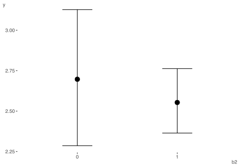
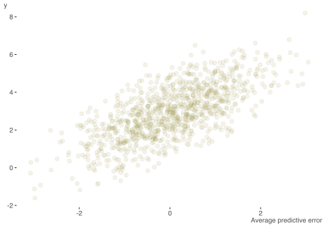
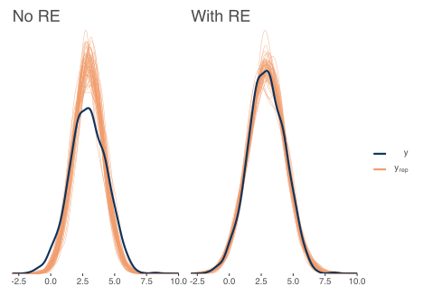
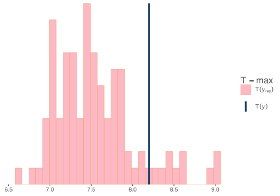

Overview
We’ve talked about the basics one can do to run a Bayesian model, and what to do if there is a problem, which was the primary goal of Part I. But it might be nice if we could avoid the problems in the first place, and our model might still be inadequate without any warnings. So let’s engage in some better practices you can use every time to help things run more smoothly, and get more from your models.
Outline for Better Bayesian Analysis
We’ll cover the following steps in more detail, but here is a general outline.
First generate ‘fake data’ to assess viability of our priors
With adequate priors, start with a simple, but plausible model
If problems at this point, see Part I
Explore and Visualize the Model Results
- Visualize covariate relationships
- Assess model effectiveness
- Use posterior predictive checks
- Other stuff
Prediction and Model Comparisons
- Get basic predictions of interest
- Explore a more viable model
- Add interactions
- Add nonlinear relations
- Account for other structure (e.g. random effects)
- Compare and/or average models
- Cross-validation
We’ll now demonstrate these steps.
Example data
NEED LINK
As before, I’m going to create some data for us to run some basic models with, the same as Part I. As a reminder, the true underlying model has categorical and continuous covariates, interactions, nonlinear relationships, random effects (observations are clustered in groups), and some variables are collinear.
For our purposes so we’ll create a data frame with the total sample size of 1000.
Simulate from priors
A good initial step in Bayesian analysis is to think about and produce some viable priors. But the obvious question is, what priors should we choose? Thankfully, for standard models there is not much guesswork involved. Bayesian analysis has been around a long time, so the bulk of the work in determing suitable priors for standard models has been done for you. Even default settings should not affect things much, especially for rstanarm, which has some basic defaults that are informed by the data. However, due to the flexibility of the brms modeling functions, some priors are unspecified and left flat (i.e. uniform), which is something we definitely don’t want. And even defaults could still cause problems for more complex situations. So how might we choose better ones?
The basic idea here is to generate parameters (e.g. regression coefficients) based on the prior distributions for those parameters, predict data based on those prior draws, and then compare the predictions to our observed target variable. The brms package makes this very easy to do. We will check the following types of priors.
We can use pp_check to examine the prior-generated data versus the observed target y, but I wait to show them all together at the end.
library(brms)
pr_uniform = prior(uniform(-100, 100), lb = -100, ub = 100, 'b')
model_default_prior = brm(
y ~ b1 + b2 + x1 + x2 + x3,
data = main_df,
iter = 1000,
sample_prior = 'only',
prior = pr_uniform
)
# pp_check(model_default_prior, nsamples = 50)
# diffuse normal for reg
pr_norm_b_0_10 = prior(normal(0, 10), 'b')
model_0_norm_b_0_10 = brm(
y ~ b1 + b2 + x1 + x2 + x3,
data = main_df,
iter = 1000,
sample_prior = 'only',
prior = pr_norm_b_0_10
)
# pp_check(model_0_norm_b_0_10, nsamples = 50)
# rstanarm-like prior
pr_auto = sjstats::auto_prior(
y ~ b1 + b2 + x1 + x2 + x3,
data = main_df,
gaussian = TRUE
)
model_auto_prior = brm(
y ~ b1 + b2 + x1 + x2 + x3,
data = main_df,
iter = 1000,
sample_prior = 'only',
prior = pr_auto
)
# pp_check(model_auto_prior, nsamples = 50)
pr_norm_b_0_1 = prior(normal(0, 1), 'b')
model_0_norm_b_0_1 = brm(
y ~ b1 + b2 + x1 + x2 + x3,
data = main_df,
iter = 1000,
sample_prior = 'only',
prior = pr_norm_b_0_1
)
# pp_check(model_0_norm_b_0_1, nsamples = 50)
pr_norm_b_norm_int = c(
prior(normal(0, 1), class = 'b'),
prior(normal(3, 1), class = 'Intercept')#,
)
model_0_norm_b_0_1_norm_Int = brm(
y ~ b1 + b2 + x1 + x2 + x3,
data = main_df,
iter = 1000,
sample_prior = 'only',
prior = pr_norm_b_norm_int
)
# pp_check(model_0_norm_b_0_1_norm_Int, nsamples = 50)
pr_norm_b_norm_int_t_sigma = c(
prior(normal(0, 1), class = 'b'),
prior(normal(3, 1), class = 'Intercept'),
prior(student_t(10, 1, 1), class = 'sigma')
)
model_0_norm_b_0_1_norm_Int_sigma = brm(
y ~ b1 + b2 + x1 + x2 + x3,
data = main_df,
iter = 1000,
sample_prior = 'only',
prior = pr_norm_b_norm_int_t_sigma
)
# pp_check(model_0_norm_b_0_1_norm_Int_sigma, nsamples = 50)
The following plot shows the model predictions based on priors only. We restrict the range of values for display purposes, so note that some of the priors would generate more extreme results. For example, the default prior setting could generate values into the \(\pm\) 500 and beyond. I also mark the boundaries of the observed target variable.

So given that our target variable is between -2 and 8, it seems that just adding some basic, data-informed information to our priors resulted in more plausible results. This will generally help our models be more efficient and better behaved. Note that if all else fails, you can use a convenience function like auto_prior demonstrated above.
Summarizing a Model
Now let’s run a baseline model, one that’s simple but plausible. Given that there will eventually be additional complexities, I’ll go ahead and add some iterations, and increase adapt_delta and max_treedepth now to make the code reusable.
library(brms)
pr = c(
prior(normal(0, 1), class = 'b'),
prior(student_t(10, 1, 1), class = 'sigma'),
prior(student_t(10, 1, 1), class = 'sd') # prior for random intercept std dev
)
model_baseline = brm(
y ~ b1 + b2 + x1 + x2 + x3 + (1 | group),
data = main_df,
warmup = 5000,
iter = 6000,
thin = 4,
prior = pr,
cores = 4,
seed = 1234,
control = list(
adapt_delta = .95,
max_treedepth = 15
),
save_pars = save_pars(all = TRUE) # potentially allows for more more post-processing functionality
)
summary(model_baseline)
Family: gaussian
Links: mu = identity; sigma = identity
Formula: y ~ b1 + b2 + x1 + x2 + x3 + (1 | group)
Data: main_df (Number of observations: 1000)
Samples: 4 chains, each with iter = 6000; warmup = 5000; thin = 4;
total post-warmup samples = 1000
Group-Level Effects:
~group (Number of levels: 100)
Estimate Est.Error l-95% CI u-95% CI Rhat Bulk_ESS Tail_ESS
sd(Intercept) 0.87 0.07 0.74 1.03 1.00 771 762
Population-Level Effects:
Estimate Est.Error l-95% CI u-95% CI Rhat Bulk_ESS Tail_ESS
Intercept 2.69 0.21 2.28 3.12 1.01 788 687
b11 0.80 0.07 0.66 0.93 1.00 935 955
b21 -0.15 0.19 -0.51 0.23 1.01 900 931
x1 0.04 0.04 -0.03 0.11 1.00 861 891
x2 -0.03 0.04 -0.11 0.04 1.00 937 903
x3 0.27 0.04 0.20 0.34 1.00 823 975
Family Specific Parameters:
Estimate Est.Error l-95% CI u-95% CI Rhat Bulk_ESS Tail_ESS
sigma 1.03 0.02 0.99 1.08 1.00 998 988
Samples were drawn using sampling(NUTS). For each parameter, Bulk_ESS
and Tail_ESS are effective sample size measures, and Rhat is the potential
scale reduction factor on split chains (at convergence, Rhat = 1).For reporting purposes all you need are the Estimate and lower and upper bounds. You might also mention that the basic diagnostics suggested no details, but you’ll still want to explore this a bit for yourself (as in Part I). If you want a visual approach to these basic results, you can use something like the following types of plots.
The tidybayes package offers some nice options as well. It takes a bit of getting used to, but can be very handy. As an example, the following gives a visual sense of the probability of regression coefficient values beyond a chosen point of interest, in this case abs(.25).
library(tidybayes)
# get_variables(model_baseline) %>% as_tibble() # to see variable names as required for plotting.
# grab fixed effects - intercept
tidy_plot_data_fe = model_baseline %>%
spread_draws(`^b_(b|x).*`, regex = TRUE) %>%
pivot_longer(b_b11:b_x3, names_to = 'coefficient')
tidy_plot_data_fe %>%
ggplot(aes(y = rev(coefficient), x = value)) +
geom_vline(xintercept = c(-.25, .25), color = 'gray92', size = .5) +
stat_dotsinterval(
aes(fill = stat(abs(x) < .25)),
quantiles = 40,
point_color = '#b2001d',
interval_color = '#b2001d',
interval_alpha = .6
) +
scico::scale_fill_scico_d(begin = .2, end = .6) +
labs(y = '') +
guides(fill = 'none') +
theme_clean()

Check Priors
Though we did some work to select our prior distributions beforehand, we might still be concerned about how influential our priors were. So how can we check whether our priors were informative? The following uses the bayestestR package to do a simple check of whether the posterior standard deviation is greater than 10% of the prior standard deviation1. Having an informative prior isn’t really a problem in my opinion, unless it’s more informative than you wanted. For example, shrinkage of a coefficient towards zero will generally help avoid overfitting.
prior_summary(model_baseline)
prior class coef group resp dpar nlpar bound source
normal(0, 1) b user
normal(0, 1) b b11 (vectorized)
normal(0, 1) b b21 (vectorized)
normal(0, 1) b x1 (vectorized)
normal(0, 1) b x2 (vectorized)
normal(0, 1) b x3 (vectorized)
student_t(3, 2.9, 2.5) Intercept default
student_t(10, 1, 1) sd user
student_t(10, 1, 1) sd group (vectorized)
student_t(10, 1, 1) sd Intercept group (vectorized)
student_t(10, 1, 1) sigma userbayestestR::check_prior(model_baseline)
Parameter Prior_Quality
1 b_Intercept informative
2 b_b11 uninformative
3 b_b21 informative
4 b_x1 uninformative
5 b_x2 uninformative
6 b_x3 uninformativeThese results suggest that we might be more informative, but for the intercept, which we largely care less about, and for the factor that is highly unbalanced (b2), which has no obvious solution. I personally would be fine with this result, especially since we took initial care in choosing these priors. If you really wanted to, you could change the priors that were informative.
Explore and Visualize Results
Now that we are feeling pretty good about the results we have, we can explore the model further. We can plot covariate effects easily with brms. The conditional_effects function is what we want here. I show results for one effect below. Without interactions or other things going, on they aren’t very interesting, but it’s a useful tool nonetheless. We’ll come back to this later.
conditional_effects(model_baseline, 'b2')

We can also use the hypothesis function to test for specific types of effects. By default they provide a one-sided probability and uncertainty interval. For starters, we can just duplicate what we saw in the previous summary for the b2 effect. The only benefit is to easily obtain the one-sided p-value (e.g. that b2 is less than zero) and the corresponding evidence ratio, which is just p/(1-p).
hypothesis(model_baseline, 'b21 < 0')
Hypothesis Tests for class b:
Hypothesis Estimate Est.Error CI.Lower CI.Upper Evid.Ratio Post.Prob Star
1 (b21) < 0 -0.15 0.19 -0.46 0.16 3.67 0.79
---
'CI': 90%-CI for one-sided and 95%-CI for two-sided hypotheses.
'*': For one-sided hypotheses, the posterior probability exceeds 95%;
for two-sided hypotheses, the value tested against lies outside the 95%-CI.
Posterior probabilities of point hypotheses assume equal prior probabilities.But we can really try anything, which is the power of this function. As an example, the following tests whether the combined effect of our categorical covariates is greater than twice the value of the x1 effect.
hypothesis(model_baseline, 'abs(b11) + abs(b21) > 2*x1')
Hypothesis Tests for class b:
Hypothesis Estimate Est.Error CI.Lower CI.Upper Evid.Ratio Post.Prob Star
1 (abs(b11)+abs(b21... > 0 0.91 0.17 0.65 1.21 Inf 1 *
---
'CI': 90%-CI for one-sided and 95%-CI for two-sided hypotheses.
'*': For one-sided hypotheses, the posterior probability exceeds 95%;
for two-sided hypotheses, the value tested against lies outside the 95%-CI.
Posterior probabilities of point hypotheses assume equal prior probabilities.One should get used to whatever tools are available for further understanding covariate effects or other parameters. This will likely lead to some of the more interesting discussion of your findings, or at least, notably more interesting than a standard regression table.
Model Effectiveness
A natural question to ask is how useful our model actually is, which then suggests we need to know how to define such utility. Such an assessment definitely cannot be made with something like ‘statistical significance’. Science of any kind is nothing without prediction, so we we can start there.
Posterior predictive checks
Posterior predictive checks are a key component of bayesian analysis. The prior checks we did before are just a special case of this. Here we actually use the posterior distributions of parameters to generate the data, and compare this model-implied data and what we actually observe. Doing so can give insight to where the model fails.
pp_check(model_baseline, nsamples = 100)
pp_check(model_baseline, nsamples = 10, type ='error_scatter_avg', alpha = .1)

In this case, we see good alignment between model and data, and no obvious pattern to the types of errors we are getting. It is often the case that we see that the model does not capture the most extreme values well, but that’s not terribly surprising. With simulated data, our situation is more pristine to begin with, but you generally can’t expect this in practice.
As an example, consider predictions with and without random effects. Including the cluster-specific effects for prediction appear to do better with the capturing the tails.

We can use the same approach to look at specific statistical measures of interest. For example, the following suggests our model is pretty good at capturing the minimum value, but typically underestimates the maximum value, which we noted earlier, is not especially unexpected in practice, particularly with smaller samples.
pp_check(model_baseline, nsamples = 100, type ='stat', stat='median')
pp_check(model_baseline, nsamples = 100, type ='stat', stat = 'max')

We can define any function to use for our posterior predictive check. The following shows how to examine the 10th and 90th quantiles. Minimum and maximum values are unlikely to be captured very well due to their inherent variability, so looking at less extreme quantiles (e.g. 10th or 90th percentile) might be a better way to assess whether the model captures the tails of a distribution.
Bayes R-squared
In this scenario, we can examine the amount of variance accounted for in the target variable by the covariates. I don’t really recommend this beyond linear models that assume a normal distribution for the target, but people like to report it. Conceptually, it is simply a (squared) correlation of fitted values with the observed target values, so can be seen as descriptive statistic. Since we are Bayesians, we also get a ready-made interval for it, as it is based on the posterior predictive distribution. But to stress the complexity in trying to assess this, in this mixed model we can obtain the result with the random effect included (conditional) or without (unconditional). Both are reasonable ways to express the statistic, but the one including the group effect naturally will be superior, assuming the variance is notable in the first place.
bayes_R2(model_baseline) # random effects included
Estimate Est.Error Q2.5 Q97.5
R2 0.4823852 0.01829985 0.446667 0.5163177bayes_R2(model_baseline, re_formula = NA) # random effects not included
Estimate Est.Error Q2.5 Q97.5
R2 0.116369 0.01448987 0.08753375 0.1446644# performance::r2_bayes(model_baseline) # alternative provides both
To show the limitation of R2, I rerun the model using a restrictive prior on the intercept. Intercepts for the resulting models are different but the other fixed effects are basically the same. The R2 suggests equal performance of both models.
| model | R2 | Est.Error | Q2.5 | Q97.5 |
|---|---|---|---|---|
| baseline | 0.116 | 0.014 | 0.088 | 0.145 |
| modified | 0.116 | 0.014 | 0.090 | 0.144 |
However, a posterior predictive check shows clearly the failure of the modified model to capture the data.
A variant of R2, the ‘LOO’ R2, is also available via the loo_R2 function. LOO stands for leave-one-out, as in leave-one-out cross-validation. It’s based on the residuals from the leave one out predictions. You can think of it as a better way to an adjusted R2 in this settings. The results suggests that the LOO R2 actually picks up the difference in models, and would be lower for the modified model, even if we included the random effects.
For more on Bayesian R2, see the resources section
Prediction & Model Comparison
In general, a model is judged most by whether it has practical value. Even if we think a model is effective, there still might be another model that can do better. So, if we’re doing what we should, we generally will have a couple of models to compare with one another. And one of the best ways to compare them is via prediction, especially by predicting on data the model wasn’t trained on to begin with.
For our demonstration, we will add two new models. The first adds interactions, the second adds a nonlinear relationship for one of the variables to that model, and is the closest to the underlying data generating mechanism.
Basic prediction
With models in hand, let’s look at our basic predictive capabilities. We can get fitted values which include ‘confidence’ intervals, or predictions, which include ‘prediction’ intervals that include the uncertainty for a new observation. We can specify these as follows. First we create a small data set to make some predictions on. It will include both values for of the binary covariates, and the means of the numeric covariates (0).
prediction_data = crossing(
b1 = 0:1,
b2 = 0:1,
x1 = 0,
x2 = 0,
x3 = 0
)
# fitted values
head(fitted(model_baseline))
Estimate Est.Error Q2.5 Q97.5
[1,] 3.510943 0.3515038 2.817057 4.201287
[2,] 3.784720 0.3517490 3.070184 4.497029
[3,] 3.854369 0.3461804 3.164223 4.550382
[4,] 4.351891 0.3518805 3.651440 5.097923
[5,] 3.171170 0.3473440 2.513093 3.888691
[6,] 3.900029 0.3440698 3.233128 4.602300# new predictions
data.frame(
prediction_data,
predict(model_baseline, newdata = prediction_data, re_formula = NA)
)
b1 b2 x1 x2 x3 Estimate Est.Error Q2.5 Q97.5
1 0 0 0 0 0 2.702195 1.062798 0.6371021 4.726339
2 0 1 0 0 0 2.549677 1.015919 0.5020679 4.586656
3 1 0 0 0 0 3.472134 1.060215 1.4655644 5.618881
4 1 1 0 0 0 3.338356 1.011263 1.3089615 5.320062In general, we’d always like to visualize the predictions. We can do so as we did before with the conditional_effects function, which would also allow us to set specific covariate values. For the third plot of the nonlinear effect, I modify the basic conditional effects plot that brms provides for a slightly cleaner visualization.
conditional_effects(model_baseline, effects = 'x2', conditions = prediction_data[1,])
conditional_effects(model_interact, effects = 'x1:b2')
init = conditional_effects(model_interact_nonlin, effects = 'x3', spaghetti = T)

Expanding your story through prediction is essential to helping your audience understand the model on a practical level. You would do well to spend time looking at specific scenarios, and especially in the case of nonlinear models (e.g. GLM) and models with interactions.
Model Comparison
In typical situations it is good to have competing models, and having additional models allows to see if improvements can be made in one way or another, both to our models, and potentially to our way of thinking about them. In a general sense, we will go about things very similarly in the Bayesian context that we would elsewhere. However, we’ll also more easily apply other approaches that are not so commonly used (even if they can be).
Choosing a model
In traditional contexts, we can use an approach to pit competing models against one another, selecting the ‘best’ model based on a particular metric, for example, AIC, cross-validation error, etc. With ‘error metrics’, the model with the lowest value is the winner. In this case, nothing is new in the Bayesian world. Here, we can use estimates like WAIC and LOOIC for model comparison, much like you would AIC to compare models in traditional frameworks. The values themselves don’t tell us much, but in comparing models, lower means less predictive error for these ‘information criteria’ metrics, which is what we want2, and since we’re Bayesian, we will even have estimates of uncertainty for these values as well. We also have cross-validation approaches (which IC metrics approximate), which we’ll demonstrate later.
With our new models added to the mix, we can now make some comparisons using loo_compare. First, we’ll add LOOIC estimates to our models, which are not done by default.
model_baseline = add_criterion(model_baseline, 'loo')
model_interact = add_criterion(model_interact, 'loo')
model_interact_nonlin = add_criterion(model_interact_nonlin, 'loo')
Next we’ll estimate the LOOIC for the baseline model. The result shows the total expected log probability (elpd_loo) for the leave-one-out observations. We also get stuff like p_loo, which is the effective number of parameters. For those familiar with penalized maximum likelihood, these are familiar analogues. However we also get a summary regarding Pareto k values, which we’ll talk about soon.
# example
loo(model_baseline)
Computed from 1000 by 1000 log-likelihood matrix
Estimate SE
elpd_loo -1500.3 22.0
p_loo 88.1 3.8
looic 3000.7 44.0
------
Monte Carlo SE of elpd_loo is 0.4.
Pareto k diagnostic values:
Count Pct. Min. n_eff
(-Inf, 0.5] (good) 993 99.3% 298
(0.5, 0.7] (ok) 7 0.7% 186
(0.7, 1] (bad) 0 0.0% <NA>
(1, Inf) (very bad) 0 0.0% <NA>
All Pareto k estimates are ok (k < 0.7).
See help('pareto-k-diagnostic') for details.Let’s now compare the baseline model to the others models using loo_compare. It shows the ‘best’ (lowest-valued) model first, followed by the others. We get the difference of each elpd vs. the lowest, also get a standard error for this difference, which you could use to help assess how different the values are statistically. Just by this standard, the model that is based on the underlying data generating model is the clear winner, as we would expect.
loo_compare(
model_baseline,
model_interact,
model_interact_nonlin
)
elpd_diff se_diff
model_interact_nonlin 0.0 0.0
model_interact -44.4 9.3
model_baseline -45.7 9.6 Now let’s compare several metrics available to us. In this particular setting, all are generally in agreement in the rank order of the models, though there appears to be no meaningful difference between the baseline and interaction models.
| model | R2 | loo_R2 | WAIC | LOOIC | ELPD | weight |
|---|---|---|---|---|---|---|
| baseline | 0.48 | 0.43 | 2998.65 | 3000.65 | -1500.33 | 1.496607e-05 |
| interact | 0.49 | 0.43 | 2995.76 | 2998.06 | -1499.03 | 3.436191e-07 |
| interact_nonlin | 0.53 | 0.48 | 2906.68 | 2909.16 | -1454.58 | 9.999847e-01 |
| a Odds are relative to baseline |
For actual model comparison we’d like to stick to using the IC values. As far as choosing between WAIC vs. LOOIC, the latter has better diagnostics for noting whether there are potential problems in using it. In practice, they will almost always agree with one another. As we noted previously, LOOIC reflects the ELPD, and this value is used in constructing the model weights shown in the last column3. The model weights can then be used in making final predictions (i.e. model averaging), or just providing a different way for your audience to gauge which model might be preferred.
Problems at the loo
https://mc-stan.org/loo/articles/loo2-weights.html
issues- overfitting, time, complexity is more accurate portrayal of nature even if not ‘best’
After the model issues discussed in Part I, the next most common point of confusion I see people have is with model comparison. Part of the reason is that this is an area of ongoing research and development, and most of the tools and documentation are notably technical. Another reason is that these are not perfect tools. They can fail to show notable problems for models that are definitely misspecified, and flag models that are essentially okay. Sometimes they flag models that other indicators may suggest are better models relatively speaking, which actually isn’t a contradiction, but which may indicate an overfit situation.
So in general, no tool is perfect, but in the real world we have to get things, so let’s address a couple issues.
Not so different models
Let’s start with the case where models do not appear to perform very differently. If two models aren’t very different from one another, the usual response is to go with the simpler model. For example, if we were only comparing the baseline model vs. the interaction model, there really isn’t much difference in terms of LOOIC/ELPD. However, we will have to consider things a little differently in the Bayesian context. Consider the following two thoughts.
The general issue is that with unregularized estimation such as least squares or maximum likelihood, adding parameters to a model (or making a model more complex) leads to overfitting. With regularized estimation such as multilevel modeling, Bayesian inference, lasso, deep learning, etc., the regularization adds complexity but in a way that reduces the problem of overfitting. So traditional notions of model complexity and tradeoffs are overturned. ~ Andrew Gelman
Sometimes a simple model will outperform a more complex model… Nevertheless, I believe that deliberately limiting the complexity of the model is not fruitful when the problem is evidently complex. Instead, if a simple model is found that outperforms some particular complex model, the appropriate response is to define a different complex model that captures whatever aspect of the problem led to the simple model performing well. ~ Radford Neal
The take-home message here is that simpler is not always better. And to be frank, using penalized (a.k.a. regularized) approaches (e.g. lasso, ridge, mixed models) should probably be our default model in the non-Bayesian context, and it turns out that such approaches actually approximate a Bayesian one with specific priors. In the end, you may have to think about things a little more carefully, and given that you are using methods that can help avoid overfitting, you may instead lean on a more complex model with otherwise similar performing models. And that would be closer to how nature works anyway, which is always more complex than our brains can easily understand.
Pareto values
Let’s look again at the basic result from using the loo function.
loo(model_interact)
Computed from 1000 by 1000 log-likelihood matrix
Estimate SE
elpd_loo -1499.0 22.0
p_loo 89.9 4.0
looic 2998.1 44.0
------
Monte Carlo SE of elpd_loo is 0.4.
Pareto k diagnostic values:
Count Pct. Min. n_eff
(-Inf, 0.5] (good) 995 99.5% 161
(0.5, 0.7] (ok) 5 0.5% 376
(0.7, 1] (bad) 0 0.0% <NA>
(1, Inf) (very bad) 0 0.0% <NA>
All Pareto k estimates are ok (k < 0.7).
See help('pareto-k-diagnostic') for details.We haven’t yet discussed Pareto values, but it is not uncommon to get a result with some values that are not ‘good’ or ‘ok’. If you happen to see Pareto values in the ‘bad’ or ‘very bad’ group, what does it mean? You can read the definition provided here, but it maynot help many due to the background knowledge needed to parse it. However, you can just understand it as an (leave-one-out) extreme value diagnostic, and if it is a problem, it mostly means your LOOIC may not be good for comparing models.
As in the standard model setting setting, ‘outliers’ indicate model incompetence, or in other words, the model’s inability to understand such observations. Unless you have reason to suspect something inherently wrong in the data (e.g. an incorrect value/typo), an outlier is a sign that your model is not able to capture the data fully. It definitely is not a reason to remove the observation!
If you have values > .7, you may recalculate LOOIC with the options provided by the loo function or use the reloo function, getting a better estimate that could then be used in, for example, model stacking for prediction. If you don’t discover many outliers, it probably won’t make much difference in your final estimates and conclusions. The output for Pareto values doesn’t even save the row identifying information that would make it easy to find which observations are the problem, but you can do something like the following.
pareto = loo(model_interact_nonlin)
problems = pareto$pointwise %>%
data.frame() %>%
rowid_to_column() %>%
filter(influence_pareto_k > .5) %>%
pull(rowid)
model_interact_nonlin$data %>%
mutate(rank = rank(y)) %>%
slice(problems)
y b1 b2 x1 x2 x3 group rank
1 4.8358455 0 0 1.6595205 -0.1663858 0.03627905 6 902
2 3.9232800 0 1 0.2235292 0.0699854 0.46457410 37 748
3 6.7825956 0 1 1.0725661 -0.6440937 1.72027097 37 999
4 2.3935576 0 1 -0.6799355 0.2057128 -1.12517628 45 366
5 3.0636922 1 1 0.5484042 -0.8082104 -0.48645929 64 544
6 8.1985399 1 1 0.3636720 0.0652158 1.37603123 68 1000
7 2.1391887 0 1 -0.8143745 0.5552497 2.07192410 69 301
8 0.1456969 1 1 -1.0297148 -0.8834361 -1.24675264 84 31
9 -1.1238591 1 0 0.8573758 0.6268734 -0.33549539 97 3As we might have expected, the observations with the more extreme target values are likely to be problems (rank closer to 1 or 1000), but for some of these, there is nothing to suggest why they might be difficult, and it’s even harder to speculate in typical modeling situations with more predictors and complexity. Furthermore, outside of additional model complexity, which might then hamper interpretation, there is often little we can do about this, or at least, what we can do is generally not obvious.
Model Averaging
With the previous statistics for model comparison we can obtain relative model weights, using the model_weights function. This essentially spreads the total probability of the models across all those being compared. These weights in turn allow us to obtain (weighted) average predictions. The key idea being that we do not select a ‘best’ model, but rather combine their results for predictive purposes4.
We can start by comparing the first two models. Adding the interactions helped, and comparing the weights suggests that it would be contributing most to averaged predictions.
Method: stacking
------
weight
model_baseline 0.288
model_interact 0.712 If we compare the baseline to our most complex model, almost the entirety of the weight is placed on the latter.
loo_model_weights(model_baseline, model_interact_nonlin)
Method: stacking
------
weight
model_baseline 0.000
model_interact_nonlin 1.000 Now we compare all three, with roughly the same conclusion.
| model_baseline | model_interact | model_interact_nonlin |
|---|---|---|
| 1e-05 | 0 | 0.99998 |
Now what about those average predictions? Let’s create a data frame that sets the continuous covariates at their means, and at each level of the categorical covariates. For our purposes here, we will also ignore group effects5. We then will make average predictions for those observations using pp_average.
prediction_data = crossing(
b1 = 0:1,
b2 = 0:1,
x1 = 0,
x2 = 0,
x3 = 0
)
average_predictions = pp_average(
model_baseline,
model_interact,
model_interact_nonlin,
newdata = prediction_data,
re_formula = NA
)
| b1 | b2 | x1 | x2 | x3 | Estimate | Est.Error | Q2.5 | Q97.5 | Baseline Estimate | Model Nonlin Est. |
|---|---|---|---|---|---|---|---|---|---|---|
| 0 | 0 | 0 | 0 | 0 | 2.71 | 1.03 | 0.66 | 4.60 | 2.69 | 2.74 |
| 0 | 1 | 0 | 0 | 0 | 2.32 | 0.96 | 0.40 | 4.28 | 2.55 | 2.30 |
| 1 | 0 | 0 | 0 | 0 | 2.97 | 1.03 | 1.09 | 4.97 | 3.49 | 2.95 |
| 1 | 1 | 0 | 0 | 0 | 3.07 | 1.03 | 1.05 | 5.05 | 3.35 | 3.08 |
We can see that the averaged predictions are essentially just the model with all the weight.
Cross-Validation
In machine learning contexts, cross-validation is the default approach to considerations of model performance. We can do so easily within the Bayesian context as well. I go ahead and do so for a single model, as well as all three models, so we can see how our previous performance metrics might change. In general, prediction on a validation set will be expected to be worse6.
With a single cross-validation model in place, we can then make predictions with it to get the test error or other metrics of interest. As we expect, the training error, i.e. that on the original/full data is better than the test error, but the latter is the better estimate of our model error, and thus a better metric for comparing models.
| train_error | test_error |
|---|---|
| 0.934 | 1.038 |
Now let’s revisit our LOOIC comparison, only now it is based on LOOIC via the cross-validation process. We would come to the same conclusions, but we can see that the differences, while still substantial, are not as great. In addition, other standard metrics can help validate the Bayesian-specific metrics, as RMSE does here.
## model_all_cv$diffs
| model | elpd_diff | se_diff | elpd_kfold | rmse |
|---|---|---|---|---|
| model_interact_nonlin | 0.00 | 0.00 | -1482.53 | 1.07 |
| model_interact | -22.08 | 11.30 | -1504.61 | 1.09 |
| model_baseline | -26.50 | 11.58 | -1509.02 | 1.09 |
Variable Selection
If desired, and most times it shouldn’t be, we can use cross-validation to help with feature selection. We’ve already discussed why this really shouldn’t be an issue, namely because there rarely is a reason to throw out variables regardless of how minimally important they might be. Furthermore, interactions among variables are the norm, not the exception. So while a variable might not do well on its own, it can be extremely important in how it interacts with another feature.
In any case, one can use the projpred package to get a sense of this, and also why it can be problematic. For one, we cannot test our nonlinear model due to its complexity7. But we can also see that, we would not choose the underlying model using this approach. In addition, for expediency I had to turn off the random effects, otherwise this would take more time than I wanted to spend for this demo. Be prepared for this sort of thing with any complexities you might be dealing with.
library(projpred)
model_feature_select_cv = update(model_interact, .~. - (1|group), cores = 4)
ref_model = get_refmodel(model_feature_select_cv) # reference model structure
var_select = cv_varsel(ref_model) # will take a long time
var_select
size elpd elpd.se
2 0 -1779.68 21.60
3 1 -1736.63 21.97
4 2 -1714.87 21.41
5 3 -1715.95 21.56
6 4 -1715.82 21.69
7 5 -1715.80 21.69
8 6 -1716.67 21.71
9 7 -1716.67 21.71The rabbit hole of model comparsion
If you start to look more into this, there are numerous technical articles, whole websites, and various discussions regarding how to go about these results. I’m guessing most don’t want to try and parse technical information only to still feel confused about what to actually do. Many suggestions typically amount to ‘your model is probably misspecified’, but without additional thoughts on how to proceed. Some of the data issues that lead to problems are just the reality of data doing what data does. The are also suggestions that posterior predictive checks (PPCs) can somehow to be used to detect the problem, but these don’t detect anything in and of themselves without very specific directed action, nor do they typically have a standard metric to report, so the practical utility does have its limits. In addition, it’s not clear to me that issues regarding specific statistics for model comparison (e.g. LOOIC estimation) should be a basis for altering a model, unless there is an obvious path for doing so, and if there was, you’d probably already be taking it.
For those that do want to go down the rabbit hole I have numerous links in the resources section.
Solutions for Model Comparison
When doing model comparison, the following summarizes some basic steps you can take to help yourself in this situation.
- Don’t assume you’ll have any certainty about some model being ‘best’.
- Avoid the problem and fit the model that includes everything of interest, assuming you have a decent data size to do so. It is likely you can still learn some things about the model by comparing it to others.
- Variable selection is typically just a model comparison problem restated differently, and in most cases I’ve come across, a very misguided endeavor. If something is even minimally important, there is no reason to throw it out, as you’d just have worse predictions doing so. With complex models, you can’t assess one variable without consideration of others, so trying to say that one is more important than the others doesn’t really make sense.
- If some application performance measure is obvious and available to assess, pick a model that does best in that setting.
- If trying to select among many competing models, e.g. feature selection, you should consider why you are in this situation. If you don’t have much data, then the usual model selection criteria may lead you notably astray. If you have a lot of data, consider why you need to select a subset and not merely use all available. If you are somewhere in between, note that you’ll likely spend a lot more time here and still not be confident in the results. However, there are approaches, such as those in the projpred package, that might be useful, but likely will only work for simpler models.
- Use the metrics noted above, e.g. LOOIC.
Resources
Prior Checks
Model Averaging
Vehtari, A., Gelman, A., and Gabry, J. (2017a). Practical Bayesian model evaluation using leave-one-out cross-validation and WAIC. Statistics and Computing. 27(5), 1413–1432. doi:10.1007/s11222-016-9696-4 (journal version, preprint arXiv:1507.04544).
Yao, Y., Vehtari, A., Simpson, D., and Gelman, A. (2018) Using stacking to average Bayesian predictive distributions. Bayesian Analysis, advance publication, doi:10.1214/17-BA1091. (online).
Pareto values
Vehtari, A., Simpson, D., Gelman, A., Yao, Y., and Gabry, J. (2019). Pareto smoothed importance sampling. preprint arXiv:1507.02646
Aki Vehtari’s A quick note what I infer from p_loo and Pareto k values
Cross-Validation
Model Comparison
- The LOO glossary
- Understanding LOOIC
- Can WAIC/LOOIC be used to compare models with different likelihoods?
The usual cases are
- misspecified models MC: all models are misspecified, so how will knowing this help us finish the project?
- models with parameters which see the information only from one observation each (e.g. ‘random’ effect models) MC: sorry, but this is reality for many such models. Assuming we can’t increase this, which is practically every situation, what are we to do about it?
- otherwise flexible models MC: how is ‘flexible’ defined? Overly vague priors?
- A quick note what I infer from p_loo and Pareto km values
- Recommendations for what to do when k exceeds 0.5 in the loo package?
- Improve model with some observations Pareto >0.7
- Bayesian data analysis - roaches cross-validation demo
- 16 What to do if I have many high Pareto k’s?
- Pareto K for outlier detection 1
These measures are not independent. If there are many high Pareto k values as in case of model 4, then elpd_loo (or looic) can’t be trusted. Even if there would be no high Pareto k values, R^2 can’t be trusted if p_loo is relatively high compared to the total number of parameters or the number of observations as in case of model 2-4. So there is no contradiction here, but you need to take into account if diagnostics tell you that some other measures can’t be used. ~ Aki Vehtari
R2
Bayesian R2 and LOO-R2 Vehtari et al.
Andrew Gelman, Ben Goodrich, Jonah Gabry, and Aki Vehtari (2018). R-squared for Bayesian regression models. The American Statistician, doi:10.1080/00031305.2018.1549100. Online Preprint.
Misc
Gabry, J. , Simpson, D. , Vehtari, A. , Betancourt, M. and Gelman, A. (2019), Visualization in Bayesian workflow. J. R. Stat. Soc. A, 182: 389-402. doi:10.1111/rssa.12378. (journal version, arXiv preprint, code on GitHub)
- Jeffrey Arnold’s Bayesian Notes has nice examples of many models and good summaries otherwise
Daniel Lakeland proposes (as a comment in the discussion of the 10% approach outlined) an alternative approach is whether the posterior estimate falls within the 95% highest density interval of the prior. This is available via the method argument:
bayestestR::check_prior(model_baseline, method = 'lakeland').↩︎Similar to AIC, LOOIC is ~ -2*expected log posterior density (ELPD), similar to how we use -2*log likelihood (a.k.a. deviance) in standard approaches for AIC. We don’t add a penalty for parameters here, and I think this is because the regularization is already built in to the modeling process, and the number of parameters might be more difficult to define in the Bayesian context with priors.↩︎
Technically we can use WAIC to produce weights like we do with AIC, e.g.
exp(waic) / sum(exp(all_waics)), but this isn’t recommended. The stacking approach allows similar models to share their weight, while more unique models will more or less keep their weight as additional models are added.↩︎Some might be familiar with Bayesian model averaging. Conceptually we aren’t changing much, but BMA assumes that one of our models is the true model, while the stacking approach underlying these weights does not. It is also different from conventional stacking in machine learning in that we are trying to average posterior predictive distributions, rather than point estimates.↩︎
In other words, for prediction we set
re_formula = NA.↩︎At the time of this writing, the underlying use of the furrr package defaults to not using a seed in it’s parallelization process, and then warns you that a seed has not been set for each repeated use of a cluster. Passing a seed through the seed argument will actually do anything presently, so one will hope that furrr will change their default behavior. It’s a nuisance that can be ignored though.↩︎
Perhaps this might be possible in a future release, but there are other complications that might make it problematic still.↩︎